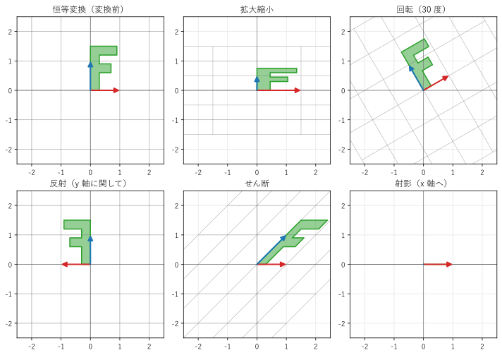
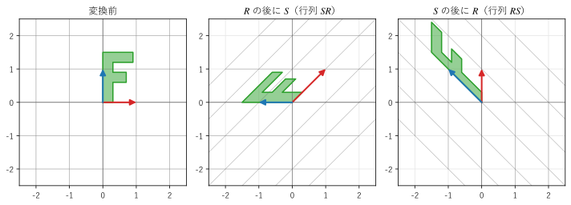
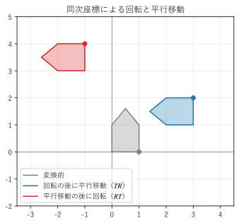

第 4 章 線形写像としての行列
第 3 章では、行列を数の表として扱った。この章では、行列を「ベクトルを別のベクトルに移す変換」として見る。この見方をすると、行列の積の意味や、交換法則が成り立たない理由が図で理解できる。本書のこれ以降の章は、すべてこの見方に基づいている。
線形写像
ベクトルを入力として、ベクトルを出力する関数 \(f: \mathbb{R}^n \to \mathbb{R}^m\) を写像という。写像 \(f\) が、任意のベクトル \(\bm{x}, \bm{y}\) と数 \(c\) について
を満たすとき、\(f\) を線形写像という。第 1 章で述べた重ね合わせの原理が成り立つ写像である。入力と出力の空間が同じ（\(m = n\)）線形写像を、線形変換とも呼ぶ。
\(m \times n\) 行列 \(A\) を掛ける写像 \(f(\bm{x}) = A\bm{x}\) は線形写像である。\(A(\bm{x} + \bm{y}) = A\bm{x} + A\bm{y}\)、\(A(c\,\bm{x}) = c\,A\bm{x}\) が成り立つからである。
逆に、どんな線形写像も行列で表せる。2 次元で確かめてみる。任意のベクトルは、基本ベクトル \(\bm{e}_1 = (1, 0)\)、\(\bm{e}_2 = (0, 1)\) の線形結合で \(\bm{x} = x_1 \bm{e}_1 + x_2 \bm{e}_2\) と書ける。\(f\) が線形なら
となる。つまり、\(f(\bm{e}_1)\) と \(f(\bm{e}_2)\) を列に並べた行列を掛ければ、\(f\) が計算できる。次の事実は、本書で最も重要なものの 1 つである。
重要
行列の \(j\) 列目は、基本ベクトル \(\bm{e}_j\) の行き先である。線形写像は、基本ベクトルの行き先だけで完全に決まる。
線形写像では、原点は原点に移り（\(A\bm{0} = \bm{0}\)）、直線は直線（または 1 点）に移り、平行な直線は平行なまま移る。そのため、方眼は「平行四辺形の方眼」に変形する。
2 次元の基本的な変換
図 3 は、2 次元の基本的な線形変換で、方眼と F の字がどう変形するかを示したものである。赤の矢印は \(\bm{e}_1\) の行き先（行列の 1 列目）、青の矢印は \(\bm{e}_2\) の行き先（2 列目）である。F の字は、左右や上下が反転すると形が変わるので、変換の向きを確かめるのに使っている。

図 3 平面の基本的な線形変換
各変換の行列は次のとおりである。
変換 |
行列 |
説明 |
|---|---|---|
拡大縮小 |
\(\begin{pmatrix} s_x & 0 \\ 0 & s_y \end{pmatrix}\) |
x 方向に \(s_x\) 倍、y 方向に \(s_y\) 倍する。図は \(s_x = 1.5\)、\(s_y = 0.5\) |
回転 |
\(\begin{pmatrix} \cos\theta & -\sin\theta \\ \sin\theta & \cos\theta \end{pmatrix}\) |
原点を中心に角 \(\theta\) だけ反時計回りに回す。\(\bm{e}_1\) は \((\cos\theta, \sin\theta)\) に、\(\bm{e}_2\) は \((-\sin\theta, \cos\theta)\) に移る。図は \(\theta = 30^\circ\) |
反射 |
\(\begin{pmatrix} -1 & 0 \\ 0 & 1 \end{pmatrix}\) |
y 軸に関して折り返す。F の字が裏返しになる |
せん断 |
\(\begin{pmatrix} 1 & k \\ 0 & 1 \end{pmatrix}\) |
高さ y に比例して、x 方向にずらす（トランプの束を横から押したような変形）。図は \(k = 1\) |
射影 |
\(\begin{pmatrix} 1 & 0 \\ 0 & 0 \end{pmatrix}\) |
x 軸に垂直に落とす。平面全体が x 軸（直線）に潰れ、F の字は線分になる |
射影の例のように、線形写像は空間を潰してしまうことがある。潰れた次元の情報は失われるので、元に戻すことはできない。どのような場合に空間が潰れるか、潰れないなら元に戻せるかは、第 6 章（逆行列と行列式）と第 8 章（ランク）の主題である。
図を描くコードを リスト 8 に示す。変換の行列を辞書 TRANSFORMS にまとめ、行列ごとに、方眼、F の字の頂点、基本ベクトルの行き先を描いている。
34def create_figure() -> Figure:
35 """変換ごとに、変換後の方眼、F の字、基本ベクトルを描く."""
36 fig, axes = plt.subplots(2, 3, figsize=(10, 7))
37 shape = la_plot.letter_f()
38 for ax, (title, a) in zip(axes.flat, TRANSFORMS.items()):
39 la_plot.setup_plane(ax, (-2.5, 2.5), (-2.5, 2.5))
40 la_plot.draw_grid(ax, a, color="0.4")
41 moved = a @ shape
42 ax.fill(moved[0], moved[1], color="C2", alpha=0.5)
43 ax.plot(moved[0], moved[1], color="C2")
44 la_plot.draw_vector(ax, a[:, 0], color="C3")
45 la_plot.draw_vector(ax, a[:, 1], color="C0")
46 ax.set_title(title)
47 fig.tight_layout()
48 return fig
F の字の頂点は、2 行 \(N\) 列の配列 shape にまとめてある（各列が 1 つの頂点）。a @ shape の 1 回の積で、すべての頂点を変換できる。行列の積の列による見方（第 3 章）のとおり、各列（頂点）に a を掛けた結果が並ぶからである。
サンプルの全体：ch04_transforms.py、la_plot.py（補助モジュール）
変換の合成と行列の積
ベクトル \(\bm{x}\) を、まず行列 \(B\) で変換し、次に行列 \(A\) で変換すると、結果は \(A(B\bm{x})\) である。結合法則から、これは \((AB)\bm{x}\) に等しい。つまり、行列の積 \(AB\) は「\(B\) の後に \(A\)」という変換の合成を表す。右側の行列から先に作用することに注意する。
変換の順序を入れ替えると、結果は一般に異なる。図 4 は、90 度の回転 \(R\) とせん断 \(S\) を、2 通りの順序で合成した結果である。

図 4 回転とせん断の合成。順序によって結果が異なる
S @ R =
[[ 1. -1.]
[ 1. 0.]]
R @ S =
[[ 0. -1.]
[ 1. 1.]]
2 つの行列は異なり、F の字の最終的な形も異なる。服を着てから上着を着るのと、上着を着てから服を着るのとで結果が違うのと同じで、変換の合成は順序に依存する。これが、行列の積で交換法則が成り立たない理由である。
サンプルの全体：ch04_composition.py
平行移動と同次座標
3D グラフィックスやロボットの制御では、回転や拡大縮小に加えて、平行移動 \(\bm{x} \mapsto \bm{x} + \bm{t}\) も使う。しかし、平行移動は原点を動かすので、線形写像ではない（\(\bm{0}\) が \(\bm{t}\) に移る）。線形写像と平行移動を組み合わせた \(\bm{x} \mapsto A\bm{x} + \bm{t}\) をアフィン変換という。
アフィン変換を行列の積だけで扱うために、同次座標を使う。2 次元の点 \((x, y)\) に 1 を付け加えて 3 次元のベクトル \((x, y, 1)\) で表すと、平行移動は 3 × 3 行列の積で書ける。
回転などの線形変換 \(A\) は、左上の 2 × 2 の部分に \(A\) を置き、右の列を \((0, 0, 1)\) にした行列で表す。こうすると、回転と平行移動の組み合わせも、行列の積 1 つにまとめられる。
図 5 は、家の形をした図形を、90 度の回転 \(R\) と平行移動 \(T\)（x 方向に 3、y 方向に 1）で変換したものである。

図 5 同次座標による回転と平行移動。点は家の右下の角 (1, 0) の行き先
19def translation(tx: float, ty: float) -> Matrix:
20 """(tx, ty) だけ平行移動する同次座標の行列を返す."""
21 return np.array([[1.0, 0.0, tx],
22 [0.0, 1.0, ty],
23 [0.0, 0.0, 1.0]])
T @ R（回転の後に平行移動）=
[[ 0. -1. 3.]
[ 1. 0. 1.]
[ 0. 0. 1.]]
R @ T（平行移動の後に回転）=
[[ 0. -1. -1.]
[ 1. 0. 3.]
[ 0. 0. 1.]]
(T @ R) @ p = [3. 2. 1.]
(R @ T) @ p = [-1. 4. 1.]
「回転の後に平行移動」（\(TR\)）では、家は原点のまわりで回ってから \((3, 1)\) だけ動く。「平行移動の後に回転」（\(RT\)）では、\((3, 1)\) だけ動いた家が、原点のまわりで回るので、大きく離れた位置に移る。3D グラフィックスでは、3 次元の点を \((x, y, z, 1)\) と表し、4 × 4 行列で同じことを行う（第 14 章）。
サンプルの全体：ch04_homogeneous.py
この章のまとめ
重ね合わせの原理を満たす写像を線形写像といい、線形写像は行列の積で表せる。
行列の \(j\) 列目は、基本ベクトル \(\bm{e}_j\) の行き先である。
拡大縮小、回転、反射、せん断、射影は、2 × 2 行列で表せる。
行列の積 \(AB\) は「\(B\) の後に \(A\)」という変換の合成である。変換の合成は順序に依存するので、\(AB \ne BA\) となる。
平行移動は線形写像ではないが、同次座標を使うと行列の積で表せる。